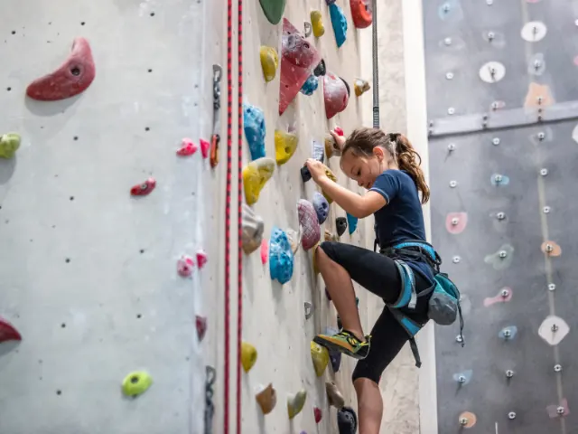

Teamuitje Nijmegen: spanning, natuur en culinair genieten
Gepubliceerd op 27 september 2025, bijgewerkt op 18 september 2026
Onderdeel van de gids Zaal huren in Nijmegen en Ondernemen in Nijmegen

Een teamuitje is dé manier om llega’s dichter bij elkaar te brengen, plezier te maken en nieuwe energie op te doen. Nijmegen leent zich daar uitstekend voor. De oudste stad van Nederland combineert een bruisend centrum met prachtige natuur en culinaire toppers. Van een spannende citygame tot een avontuurlijke klimpartij en een stijlvol diner: er is voor ieder team iets te beleven.
Escape Game The Hunt – de ultieme teambuildingervaring
Wie op zoek is naar een spannend en uniek teamuitje in Nijmegen, kan niet om Escape Game The Hunt heen. Tijdens dit actieve stadsspel rennen teams dwars door de binnenstad van Nijmegen terwijl Hunters jullie op de hielen zitten. Gebaseerd op populaire tv-programma’s zoals Hunted en Jachtseizoen, draait het om samenwerken, slim puzzelen en strategisch bewegen. Onder tijdsdruk moeten aanwijzingen worden gevonden en codes worden gekraakt om uit handen van de Hunters te blijven. Het spel is intens, maar tegelijk ontzettend leuk: je leert elkaar op een andere manier kennen en je ontdekt verborgen plekjes van de stad. Outdoor Escape Room Nijmegen is geschikt vanaf 12 personen, maar er zijn ook open inschrijfmomenten voor kleinere groepen. Het resultaat? Een teamuitje vol adrenaline, spanning én hilarische momenten die nog lang onderwerp van gesprek zullen zijn.
Ontdek de stad met Gilde Nijmegen
Voor wie het wat rustiger aan wil doen, biedt een stadswandeling met Gilde Nijmegen een prachtige aanvulling op de dag. Vrijwillige stadsgidsen nemen je mee langs iconische plekken zoals het Valkhofpark, de Waalkade en historische gebouwen in de binnenstad. Onderweg vertellen ze boeiende verhalen en anekdotes, waardoor je de stad op een heel andere manier leert kennen. Of je nu geïnteresseerd bent in geschiedenis, architectuur of cultuur, de gids past de wandeling aan op de groep. Een stadswandeling is niet alleen leerzaam, maar ook een ontspannen manier om samen te zijn en Nijmegen te beleven. Perfect te combineren met een lunch of borrel in de binnenstad.
Stoer op pad met Hop & Go e-choppers
Wil je het teamuitje in Nijmegen een avontuurlijk tintje geven? Stap dan op een stoere e-chopper van Hop & Go Nijmegen. Deze elektrische scooters zijn stil, milieuvriendelijk en gemakkelijk te besturen, ook voor beginners. Samen trek je de stad uit en ontdek je de prachtige natuur van de Ooijpolder en de heuvels rondom Nijmegen. Met routes langs de Waal, dijken, pittoreske dorpjes en groene weilanden is dit een ontspannen maar actieve ervaring. Onderweg is er volop gelegenheid om even te pauzeren bij een terras of picknickplek. Een e-chopper tour geeft je team een gevoel van vrijheid, avontuur en plezier – én levert gegarandeerd mooie foto’s op voor het teamarchief.

Hoog in de bomen bij Fundustry Nijmegen
Voor teams die van actie houden, is het klimpark van Fundustry Nijmegen op de Groene Heuvels een absolute aanrader. Hier klim je samen tussen de boomtoppen, trotseer je spannende touwbruggen en zoef je naar beneden via lange ziplines. Er zijn parcoursen op verschillende hoogtes en moeilijkheidsniveaus, waardoor iedereen mee kan doen op zijn eigen tempo. Het leuke van een klimpark is dat je elkaar continu moet aanmoedigen en ondersteunen. Samen grenzen verleggen en uitdagingen overwinnen zorgt voor een sterke band binnen het team. De professionele instructeurs zorgen voor veiligheid en begeleiding, waardoor zelfs de grootste hoogtevrees overwonnen kan worden. Dit maakt het tot een uitdagende én verbindende ervaring.
Culinaire afsluiter bij De Nieuwe Winkel
Een dag vol avontuur sluit je natuurlijk af met een goed diner. In Nijmegen is Restaurant De Nieuwe Winkel een culinaire topper die je niet mag missen. Dit bekroonde restaurant heeft twee Michelinsterren, waaronder één groene ster voor duurzaamheid. Chef Emile van der Staak en zijn team koken voornamelijk plantaardig en werken met ingrediënten uit hun eigen voedselbos. Het resultaat: verrassende gerechten die niet alleen heerlijk smaken, maar ook een verhaal vertellen. Voor teams is een diner bij De Nieuwe Winkel een bijzondere beleving. De stijlvolle setting in een voormalig klooster maakt de avond compleet. Hier proeven jullie samen niet alleen bijzondere smaken, maar ook de creativiteit en visie van de keuken. Een perfecte manier om een geslaagd teamuitje in Nijmegen in stijl af te ronden.
Nijmegen heeft het allemaal
Of je nu kiest voor spanning met Escape Game The Hunt, cultuur tijdens een stadswandeling, avontuur op een e-chopper, actie in het klimpark of een culinair hoogtepunt bij De Nieuwe Winkel: Nijmegen heeft alles in huis voor een onvergetelijk teamuitje. Door de veelzijdigheid van de stad is het eenvoudig om activiteiten te combineren tot een compleet dagprogramma dat bij jouw team past. Eén ding is zeker: na een dag vol avontuur, gezelligheid en samenwerking keren jullie gegarandeerd terug met nieuwe energie én mooie herinneringen.
Terug naar de beginpagina